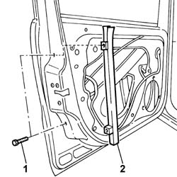

7005D24 front door window rear guide - r r
- Path
- Procedures > 70 FITTINGS > 7005 PASSENGER COMPARTMENT FRONT SIDE DOORS > 7005D front side door window glasses > 7005D24 front door window rear guide - r r
- Kind
- repair procedure (removal / refitting; the operation number is the code)
- Applies to
- all engines; all production periods
- Interactive page
- https://sloeber94.github.io/elrnDB-fPnd/en/#/2753056
Applies to: all engines; all production periods
 Removing
Removing
 Refitting
Refitting5570T91 Front SIDE LOUDSPEAKER. (one), left or right - R.R. with door panel removed
7005A04 front side door water guard protection - r r or replace with door panel removed
1. Undo the retaining bolts.
2. Remove the rear guide from inside the door frame.

Applies to: all engines; all production periods
Refitting
RemovingFit the rear door guide in its seating in the door frame and tighten the bolts.
7005A04 front side door water guard protection - r r or replace with door panel removed
5570T91 Front SIDE LOUDSPEAKER. (one), left or right - R.R. with door panel removed
Topics linked from this page (2)
- 5570T91 Front SIDE LOUDSPEAKER. (one), left or right - R.R. with door panel removed
- 7005A04 front side door water guard protection - r r or replace with door panel removed